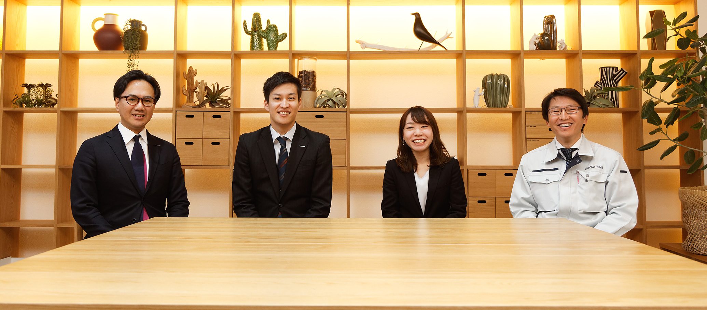

みんなでつくる泉北ホーム
専門家とは逆の「お客様目線」を大切に、
プロとしての知識・サービスを提供する。
それが、泉北ホームのモットーです。
ここでは、それぞれの担当者がチームとして、
どのように家づくりに取り組むのか、
どうやって専門性の高い
サービスを実現できているのか、
「みんなでつくる」をテーマに語ってもらいました。

ATSUHI OKAMOTO
岡本 篤士
設計部 2003年度入社
HIROKI NISHIURA
西浦 広騎
営業部 2014年度入社
MIDORI TANAKA
田中 翠
インテリアコーディネート部
2017年度入社（中途）
NORIKAZU NAKAGAWA
中川 経和
工事部 2010年度入社（中途）
専門家チームが密に連携しながら、
「お客様目線」の家づくりに取り組んでいく。
西浦 まずは「どんな暮らしをしたいのか？」「どんな設備がほしいのか？」など、営業が家づくりへの想い、夢をヒアリングするところからスタートします。
西浦 基本的には本社のショールームにご案内することが多いです。実際に設備などを見ていただいて、イメージを明確にしていただきます。
西浦 ご契約いただいたら、社内スタッフへの申し送りを行います。営業は、お客様と最も長い期間接することになるので、それまでにおうかがいしたご要望はもちろん、言葉には出てこない人となりやお好みも含めて各スタッフに共有します。たとえば控えめなお客様なら、「積極的に連絡してコミュニケーションの回数を増やしてあげてください」といった感じです。この時点では、お客様はまだ営業としか面識がない状態。つまり「泉北ホーム」という看板と「西浦」という営業に対してご契約いただいたと言えるので、その信頼に応えられるよう最後までサポートしていきます。
岡本 営業からの情報を活用しながらコミュニケーションをとっていきます。いただいたご要望に対して「なぜそうしたいのか」を確認していき、「それならこうした方がより良くなる」というご提案を行います。たとえば「収納がたくさんほしい」というご要望に対して、ベストなご提案を行おうと思えば、「どこに必要なのか？ 何を入れるためか？」と掘り下げていかなくてはいけません。場合によっては、設計のヒントを探すためにご趣味をうかがうことも。ご要望の根底にある想いを吸い上げていくことで、末永くご満足いただける設計を実現していきます。
田中 お客様の安心感・信頼感を得られるよう、設計からの情報をもとに、初回打ち合わせからお客様の好みに合ったご提案ができるように努めます。なかには、「どうしてわかるの？」と喜んでくださる方も。「自分たちの好みをよくわかってくれている」とご安心いただくことで、その後の打ち合わせもスムーズになります。内装のほか、外観や設備なども含めて打ち合わせていきますが、泉北ホームの「フル装備の家」は選べる仕様が多いので、インテリアコーディネーター（以下、IC）としての仕事の幅も広いと感じますね。
中川 着工にあたっては、まず設計・ICとの三者で打ち合わせを行い、図面上の不明点を洗い出しておきます。たとえば窓際に手すりがあれば、「これは『窓手すり』という認識で合っているか」など、設備や寸法について不明瞭な点や問題点を徹底的にチェックしていきます。時期や仕様によっても変わりますが、着工からだいたい4カ月弱で竣工となります。
社内検査・
お引渡し
西浦 スタッフ全員が立ち会って社内検査を行います。営業としては、ご契約いただいたときももちろんですが、お引渡し後にご連絡いただいたときもうれしいです。1年以上たってから電話や年賀状をいただくことがときどきあるので。
田中 お客様が悩み抜いた末に採用された個性的な壁紙や外壁などが、完成してみると意外とマッチしていたときは安心しますね。お客様も喜ばれていると「良かったな」と思います。
岡本 打ち合わせでもお引渡しでも、お客様に喜んでいただけるのがやりがいです。私も、お引渡し後に食事に招いていただいたことがあるのですが、そうした機会に生の声を聞けるのがとてもうれしいですね。
中川 お引渡しにあたっては、設備等の説明を行います。家の完成にテンションが上がっている方、気持ちを抑えて冷静に振る舞われる方、さっそく採寸される方など、お客様もいろいろです。アフターサービスでうかがうこともあるので、末永く良い関係を築いていけるとうれしいですね。
連携を支えるワンフロアのオフィスで、
年齢も職種も越えてコミュニケーション。
中川 ハウスメーカーでも、各職種の仕事がここまできちんと分かれている会社は少ないんじゃないでしょうか。以前は規模の小さい会社で働いていましたが、ICや設計・積算の仕事も一部担当しなくてはならなかったので、自分の専門領域にしっかり集中できる泉北ホームの環境には驚きました。
田中 他のハウスメーカーを知らないので、最初はこれが普通なのかと思っていました。
中川 棟数を多く担当できるのも、チームで分担して家づくりに取り組むからこそ。専門分野の経験値がどんどんたまってレベルアップしやすい環境だと思います。
岡本 多人数で取り組むからこそ、連携が重要になりますよね。オフィスがワンフロアなのも、コミュニケーションのためです。
西浦 立てば端から端まで見渡せるので、「デスクにあの人いるかな？」というのもすぐにわかりますよね。
田中 設計の図面を見てわからないことはすぐに聞けるし、みなさんちょっとした質問にもとても丁寧に教えてくれます。
岡本 いつも和気あいあいとしているよね。仕事以外の会話も多いと思う（笑）。
田中 そうですね（笑）。
中川 「そこにいるからすぐ聞ける」というのは、強みですよね。でも、相手の作業を中断させることになるから、ある程度まとめて質問するといった配慮は必要です。特に岡本さんは、いつも大変そうなので（笑）。
西浦 岡本さんは、賃貸のこととか、他の人が知らないようなことにも詳しいから質問が集中しがちですよね。僕もいろいろ教わっているので、なんとも言いにくいですが（笑）。
岡本 たしかに、仕事に没頭したいときもあります（笑）。でもひとりで悩むくらいなら、質問して解消してもらった方が、その人の仕事はスムーズになると思うので。
中川 良くも悪くも、みんな気を使わずフランクに質問してますよね（笑）。
岡本 「その質問、2回目やん！」っていうのは困るけど（笑）、まあお互いさまということで。
西浦 どの職種のスタッフも、みんな仕事にプライドを持って取り組んでいるのを感じます。それぞれが精いっぱい取り組んでいるのはお客様にも伝わっていると思います。こちらも自信を持って営業できますね。
岡本 いろんな場面で、お互いにフォローし合えていることに感謝です。
田中 私も、施工現場まで車で行かないといけないとき、細い道をスイスイ運転してくれることに感謝です。
岡本 そういえば運転苦手だったね（笑）。
田中 ほかにもありますよ！ お客様とのIC打ち合わせが長引いてスケジュールがおしてしまったときに工程を調整してくれたりするのも、とても助かります。
中川 営業部には本当にお世話になりますね。工事でも職人さんが病気になってしまったりすると、お客様への工期遅延の連絡をお願いすることになるので。気苦労をかけてしまうけれど、助かっています。
西浦 そこはもちろん営業の仕事なので、大丈夫ですよ！ 泉北ホームでの仕事は楽しいので、毎日ポジティブに取り組めています。
岡本 スタッフ同士の連携にも関わるところですが、泉北ホームのアットホームさ、距離感の近さは特長ですよね。
中川 社員旅行などの交流イベントも少なくないし、いろんな人と関われるおかげかもしれません。
岡本 若い人も先輩に質問しやすいんじゃないかな。
田中 そうですね。もちろんデスクワークではみんな集中しているんですけど、先輩に質問しやすい空気感だと思います。特にIC部は全員女性なので、にぎやかで楽しいですよ（笑）。
中川 にぎやかですね…。
岡本 にぎやかすぎる人もいたり…。
一同 （笑）。
西浦 お客様の財産を預かる重要な仕事ですが、その分やりがいがあります。プレッシャーは大きいですが、成績を上げればしっかりと評価される環境なので、これからもがんばっていきたいと思います。
田中 まだまだお客様のご要望やイメージをつかむのに時間がかかることがあるので、ヒアリング力をもっと高めていきたいですね。そこがもっとスムーズになれば、プラスアルファのご提案もできるようになっていくでしょうから。
中川 実は建築って、設備も工法もまだまだ成熟し切っていないんです。この10年だけでもどれだけ変わったことか。
岡本 いろいろ進化してきていますよね。
中川 さらに10年後には、たとえば「結露」という概念すら忘れ去られているかもしれません。そうした変化に対して常にアンテナを張っておきたいと思います。
岡本 お客様のニーズやご要望のレベルも上がっていくでしょうから、それぞれのスタッフが自らの専門性をこれからも高めていくことが求められると思います。「お客様目線」で100点の家づくりを目指し、チームで連携しながら、これからも取り組んでいきたいですね。